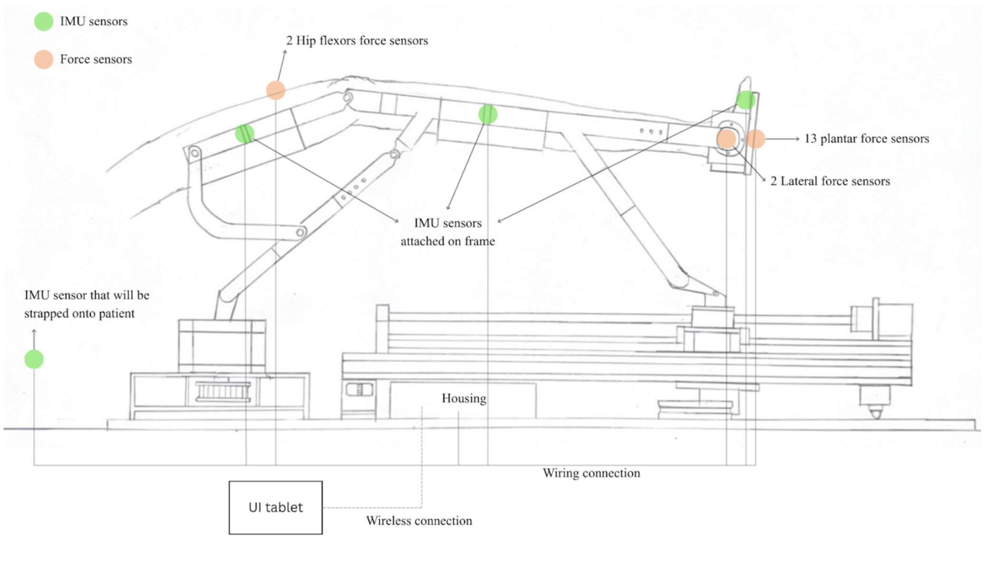

4.1 Mechanical Design
The mechanical design encompasses design inspiration, initial sketches, sub-assemblies of the device, and mechanism comparisons.
4.1.1 Design Inspiration
The initial device concept uses a motor-driven ball screw to create linear motion along an aluminium profile, transferred through a linkage system to produce controlled angular movement of the footrest for simulating lower-limb flexion and extension. Several issues were identified in this version:
- Many components are difficult to fabricate.
- Custom rod assemblies limit part interchangeability.
- The frame lacks structural rigidity.
- The CPM-based design only supports passive motion, preventing active or resistive rehabilitation.

Figure 13. Initial prototype CAD model (Version 0) with component labels.
4.1.2 Design Concepts
Based on preliminary research from an SGH exercise video (SingHealth, 2011), the team narrowed exercise capabilities to focus on 6 key movements:
- Hip flexion & extension
- Hip abduction & adduction
- Knee flexion & extension
- Ankle plantarflexion & dorsiflexion
Figure 15. Version 0 prototype — ball screw linear actuator with parallel multi-link mechanism.
4.4.2.1 Folding Concept
For the second prototype, interviews with physiotherapists indicated the device should support both sitting and lying positions. Three design concepts were developed:
Figure 17. Concept 1 — Stand Design.
Figure 18. Concept 2 — Scissors Design.
Figure 19. Concept 3 — Foldable Design (selected).
| Criteria | Stand Design | Scissors Design | Foldable Design |
|---|---|---|---|
| Usability | − | + | + |
| Portability | − | − | + |
| Stability | − | − | + |
| Adjustability | + | + | + |
| Manufacturability | + | − | + |
| Safety | − | − | + |
| Net Score | −2 | −1 | 6 ✓ Selected |
Table 13. Design concept evaluation matrix.
4.4.3 Linear Movement
Several mechanisms were evaluated for linear motion. A ball screw linear actuator was selected for its relative simplicity, proven reliability, low maintenance, and high user ergonomics.
| Mechanism | Reliability | Maintenance | Mechanical Complexity | User Ergonomics |
|---|---|---|---|---|
| Linear Actuator (ball screw) | High (proven tech) | Low (minimal upkeep) | Low | High (easy to use) |
| Hydraulic Resistance (motor pump) | High (precise control) | High (oil changes, pump maintenance) | High | Medium (effective but noisy, heavy) |
Figure 20. Linear movement mechanism comparison.
4.4.4 Lateral Movement
The device must move ±40° laterally. An arc rail mechanism was selected, building on an initial concept from the UROP predecessor, with the arc rail repositioned beneath the linear sub-assembly to improve load distribution.
| Mechanism | Reliability | Maintenance | Mech. Complexity | User Ergonomics | Net Score |
|---|---|---|---|---|---|
| Linear Rail (2 rails) | + | − | − | + | 0 |
| Arc Rail (Rotating Base) | + | − | + | + | 3 ✓ |
| Pivot (Motorised Slider) | + | − | + | + | 3 |
Table 14. Lateral movement mechanism comparison.
Figure 21. Final arc-rail-based lateral movement assembly.
The lateral movement is driven by a Nema 23 motor mounted at the rear of the assembly, with power transmitted through a belt-and-pulley system chosen for its light weight and ease of installation compared to gear or chain mechanisms.
4.5 Sensing Design Concepts
Three sensing subsystem concepts were evaluated.
4.5.1 FIMU (Force + IMU) Design Concept
The IMU subsystem combines an accelerometer, gyroscope, and optionally a magnetometer to measure motion and angular velocity across three axes. This concept employs a four-IMU setup (lower back, thigh, shank, and foot).
Force sensors target key pressure points on the foot: hallux, metatarsals, midfoot, and heels. For medial-lateral force sensing, sensors are placed near the medial and lateral malleoli.
Figure 31. FIMU sensor placement for positional and force sensing.
Figure 32. Foot pressure map for plantar force sensor placement.
4.5.2 Hall-Force-Flex (HFF) Design Concept
The HFF subsystem combines Hall-effect sensors, force sensors, and flex sensors to capture biomechanical data. These sensors are positioned at key regions for hip/knee positional sensing, plantar force sensing, lateral force sensing, and ankle positional sensing.
Figure 33. HFF sensor placement diagram.
4.5.3 Computer Vision Design Concept
A computer vision sensor uses an RGB camera and pose-estimation algorithms to track 3D joint positions (e.g., hip, knee, ankle) and compute joint angles from relative body segment orientations. Markers are placed on key joints, and movements are processed using Tracker Software to determine marker positions and calculate joint angles.
4.5.4 Concept Evaluation
| Criteria | FIMU | HFF | Computer Vision |
|---|---|---|---|
| Force Sensing — Plantar | + | + | − |
| Force Sensing — Lateral | + | + | − |
| Positional Sensing | + | − | + |
| Metrics (ROM, Strength, Reps, Jerk) | + | + | − |
| Processing Time | − | + | − |
| Ease of Set-Up | + | + | + |
| Output Quality | + | − | − |
| Cost | − | − | + |
| Feasibility for Stroke Rehab | + | − | + |
| Net Score | 6 ✓ Selected | 1 | 0 |
4.5.5 Component Selection — Force Sensors
| Attribute | FlexiForce A401 | FlexiForce A502 | FlexiForce A301 |
|---|---|---|---|
| Cost (USD) | $22.56 | $27.61 | $14.58 |
| Sensing Width / Diameter | 56.9 mm (Ø) | 50.8 × 50.8 mm | 9.53 mm (Ø) |
| Shape | Circle | Rectangle | Circle |
| Maximum Force Range | 31,137 N | 44,482 N | 4,448 N |
| Linearity Error | <±3% FS | ±3% FS | ±3% FS |
| Selection | ✓ Selected — lower cost, shorter lead time, meets 0–1000 N plantar and 0–200 N lateral force ranges; circular shape better conforms to anatomical surfaces. |
Table 15. Force sensor component comparison — FlexiForce A301 selected.
4.7 Electrical Design
For motor selection, the maximum torque that the screw bar can resist before backdriving must be determined. Using a 150 kg load and a 10 mm screw lead:
Where F = load, P = screw lead, η₂ = efficiency of the bar (assumed 0.9). Calculated backdriving torque = 2.15 Nm.
4.7.1 Motor Selection
| Criteria | Brushed DC | Brushless DC | Stepper | Servo |
|---|---|---|---|---|
| Efficiency | Low | High | Low | Medium |
| Torque Characteristics | Moderate at low speeds | High across RPM range | Excellent at low speeds; decreases at high RPM | Moderate across RPM range |
| Torque / Weight Ratio | Low | Low | Moderate | High |
| Control Type | Closed-loop | Closed-loop | Open-loop | Closed-loop |
| Control Complexity | High | High | Low | High |
| Total Grade | −5 | 0 | 4 ✓ | −2 |
Figure 25. Motor concept evaluation.
Holding torque: 3.0 Nm (exceeds the 2.15 Nm backdriving torque requirement).
4.7.3 MCU Selection
| Attribute | Teensy 4.1 | Arduino UNO R4 Wi-Fi | Raspberry Pi Pico W2 | STM32F103RCT6 |
|---|---|---|---|---|
| Architecture | ARM Cortex-M7 (32-bit) | ARM Cortex-M4 (32-bit) | Dual ARM Cortex-M33 / Hazard3 RISC-V (32-bit) | ARM Cortex-M3 (32-bit) |
| Clock Speed | 600 MHz | 48 MHz | 150 MHz | 72 MHz |
| Flash Memory | 7936 kB | 256 kB | 4 MB | 512 kB |
| RAM | 1024 kB | 32 kB | 520 kB | 64 kB |
| Network Protocol | Ext. Wi-Fi module | Wi-Fi & Bluetooth | Wi-Fi & Bluetooth | Ext. Wi-Fi module |
| Cost | $50.80–$57.80 | $38.02 | $9.62 | $10.86 |
| Total Grade | 2 | −1 | 7 ✓ Selected | 3 |
Figure 26. MCU comparison. Raspberry Pi Pico W2 selected for best price-to-performance ratio with built-in Wi-Fi and Bluetooth.
4.7.4 Simplified Electrical Schematic
The power architecture flows as follows:
- 230V / 50Hz wall plug → AC-DC Power Adapter → 48 VDC for motors.
- DC-DC Buck Converter → 5 VDC for the MCU (Raspberry Pi Pico W2).
- Low-Dropout Regulator (LDO) → 3.3 VDC for sensors (IMU, force sensors).
Communication protocols: IMU uses I2C via multiplexer; force sensors and other peripherals use standard GPIO and ADC.
The MCU connects to the tablet/smartphone via Wi-Fi for user interface communication.
Figures 27–30. Simplified electrical schematic diagrams (Parts 1–4).
4.8 UI Design Concepts
The UI serves as the central platform for configuration of the Kinetix device, tracking of patient recovery, and a companion 'instructor' for patients during rehabilitation. Two iterations were developed:
Iteration 1 — Initial Two-View Approach
The first design concept featured a two-view approach for both physiotherapists and clients, including biometric login, session scheduling, and an AI report viewer.
Figure 34. First iteration user flow diagram.
Iteration 2 — Revised Therapist-Focused Flow
Feedback on the first UI showed the need for a therapist-focused interface, removal of unnecessary calendar/logging features, and inclusion of gamification to motivate clients.
| Aspect | Issue (Iteration 1) | Change (Iteration 2) | Outcome |
|---|---|---|---|
| Interface Complexity | Too many features; cluttered; not physiotherapist-friendly | Simplified layout; reduced menu depth; therapist-driven flow | Therapists reported clearer navigation and lower cognitive load |
| Gamification | Suggested to improve client engagement | Added target-based animations, rep progress cues, point system | Increased engagement and perceived motivation |
| Session Logging / Calendar | Unnecessary for clinical use | Removed; replaced with goals/progress dashboard | Dashboard considered more clinically meaningful |
| User Journey Flow | Lacked clarity on therapist–client role transitions | Structured, colour-coded 5-stage journey | Improved consistency in operation |
| During-Session Interaction | Clients not adequately considered | Tablet rotation during session + real-time visual cues | Clients found visuals intuitive; therapists liked dual-orientation design |
Figure 35. Revised user flow diagram — Iteration 2 with 5-stage colour-coded journey.